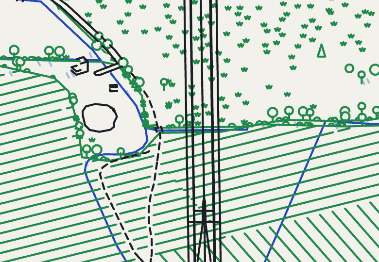
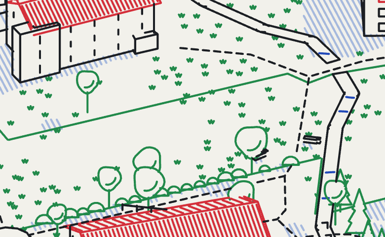

15 November 2026 · Original review · Round 10
Path dashes now measure distance on the printed sheet. At the reference 0.35 mm pen, a full dash is 1.1 mm long with a 0.8 mm gap; both grow with broader pens. Foreshortened paths no longer collapse into tiny marks that the stroke filter removes, so their centre lines remain legible inside the cleared texture corridors.
The pattern continues through bends and repeated vertices. Explicit dash/gap transitions also remove a small rounding drift that depended on how many vertices a way contained. Track ruts share this treatment; stair treads retain their separate spacing rule.



Mollis, Rye and Trubschachen at 1:1000 and 1:4000, Detail 1, 0.35 mm pen, optional OSM tags off. Waste falls in every case. Restoring missing path marks adds ink and roughly 1% estimated plotting time in the coarse views.
| Sheet | Waste before → after | Estimated time change |
|---|---|---|
| Mollis 1:1000 | 6.8% → 6.0% | +0.42% |
| Mollis 1:4000 | 13.0% → 12.0% | +1.02% |
| Rye 1:1000 | 6.6% → 6.2% | -0.02% |
| Rye 1:4000 | 13.3% → 12.2% | +1.03% |
| Trubschachen 1:1000 | 5.7% → 5.4% | +0.42% |
| Trubschachen 1:4000 | 12.2% → 11.1% | +1.29% |
Before lab report · After lab report (local generated files)
Reviewed all twelve changed golden sheets, six LOD sheets and their centre close-ups, plus the enlarged field and village comparisons. Only path strokes and resulting plot/SVG summaries changed; other feature totals, census and counts are unchanged. New regression tests cover dash lengths and gaps across directions, shallow and steep tilt, coarse and close scales, regular and broad pens, repeated vertices, bends, and road-mask clipping. Build and all 574 tests pass.
No physical prints were inspected, nor every seed, bearing or all 29 presets. Short final dashes and fragments clipped by objects can still be removed by the ordinary stroke filter. Track ruts use the same dash helper but were not inspected in a dedicated close-up. Stair readability, shadow crossings and standing objects remain separate refinements.